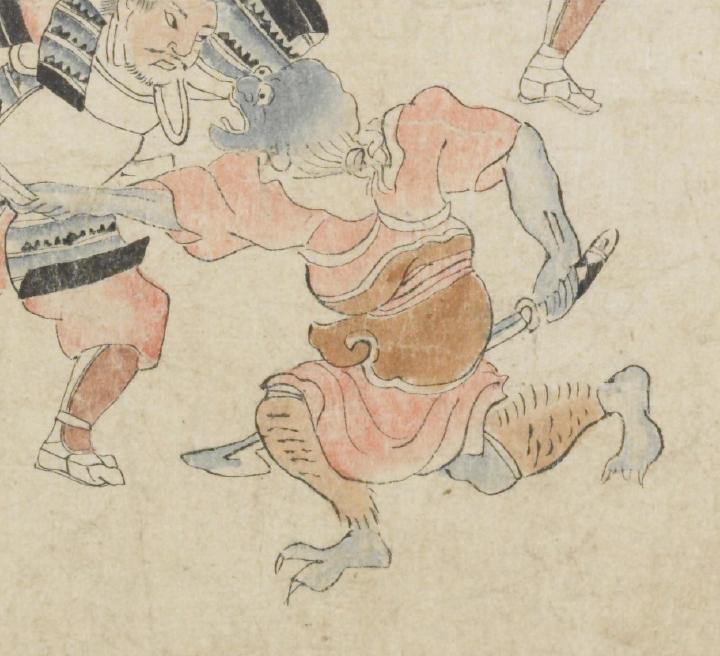

青い肌の鬼。禿げた頭頂部は歪み、後頭部から髪が生えている。大きな目玉は寄り、鼻も大きい。足指に鋭い爪が生えている。赤い着物の上に茶色い鎧を着け、毛皮の脚絆を着けている。右手に刀を持ち、左側の武士と組み合っている。
著作者：坂本弥一郎徳定／出典：親書誌：U426_nichibunken_0080：伊吹山酒呑童子絵巻；イブキヤマシュテンドウジエマキ／日付：2007／資源識別子：U426_nichibunken_0080_0014_0001
Copyright (c)2010- International Research Center for Japanese Studies, Kyoto, Japan. All rights reserved.